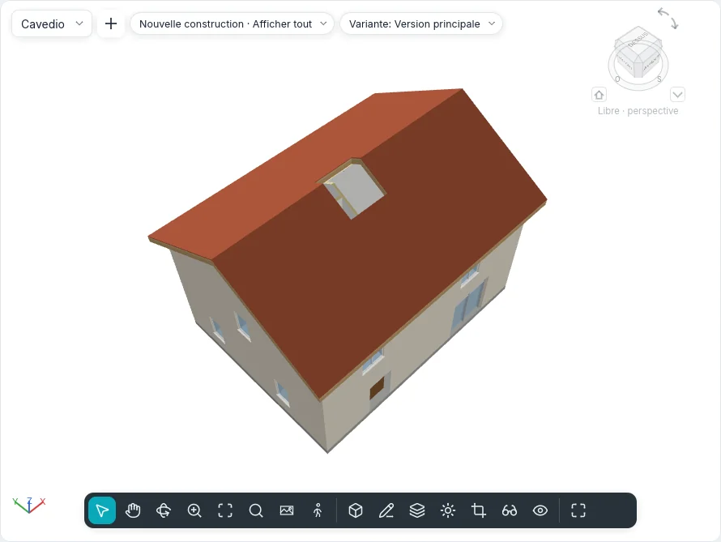

Ouvertures
Le groupe Ouvertures des onglets Modéliser et Structure perce des trous que rien ne remplit : dans les sols, les toits et les faux plafonds (Par face, Verticale, Lucarne), à travers plusieurs niveaux à la fois (Gaine) et dans les murs (Dans un mur). Les cinq outils portent les mêmes noms dans les deux styles d'interface et en mode tactile, et la ligne de commande les exécute aussi.
Une ouverture est un élément à part entière : elle se sélectionne, se modifie, se déplace et se supprime comme toute autre, et elle suit son hôte. Une boucle dessinée dans l'esquisse propre d'un sol, d'un toit ou d'un faux plafond reste une ouverture du contour de cet élément, comme avant.
Ouvertures dans les sols, les toits et les faux plafonds
| Outil | Comment il coupe |
|---|---|
| Par face | Perpendiculairement à la face choisie : sur un toit en pente, les côtés du trou suivent la pente, à travers toutes les couches |
| Verticale | D'aplomb, à travers tout l'élément, quelle que soit sa pente |
| Lucarne | D'aplomb à travers le toit principal, à l'intérieur du contour choisi sur les murs et le toit de la lucarne |
- Lancez l'outil dans un plan (un plan de plafond pour les faux plafonds) ou dans une vue 3D. Lancé dans une coupe ou une élévation, Atteindre la vue propose les plans.
- Survolez l'élément : il est souligné en orange. Avec Par face, appuyez sur TAB pour choisir sa face inférieure au lieu de sa face supérieure (en 3D, la face que vous visez par en dessous est la face inférieure). Lucarne ne propose que des toits.
- Cliquez dessus. Le mode esquisse s'ouvre, Créer le contour de l'ouverture, avec le groupe Dessiner : Ligne, Rectangle, Choisir des lignes et les autres formes. Lucarne ne propose que Choisir les bords du toit/mur : seul ce qui peut délimiter une lucarne se met en évidence (la face latérale d'un mur, le toit de la lucarne, un sol, un bord du toit principal). Choisissez les faces intérieures des murs de la lucarne et son toit : les lignes n'ont pas à se rejoindre, l'ouverture qu'elles délimitent apparaît en pointillé, coupée d'aplomb le long des murs et jusqu'où le toit principal monte au-dessus de la sous-face du toit de la lucarne. Elle les suit quand les murs bougent ou que les toits changent.
- Dessinez des boucles fermées, puis Terminer le mode d'édition. Les lignes ouvertes ou qui se croisent sont refusées avec un message, et l'esquisse reste ouverte.
Une boucle qui traverse le bord de l'élément l'entaille ; une boucle entièrement à l'extérieur ne coupe rien et est écartée, avec un message.
Un sol, un toit ou un faux plafond sélectionné a aussi Ouverture ▸ Verticale dans son onglet contextuel : l'esquisse s'ouvre aussitôt sur lui, sans le choisir à nouveau.
Gaines
Gaine coupe tous les sols, les toits et les faux plafonds entre deux hauteurs.
- Lancez Gaine dans un plan (ou en 3D, sur le niveau actif). Le mode esquisse s'ouvre, Créer l'esquisse de l'ouverture de cage.
- Avec Ligne de contour choisie, dessinez le contour de la gaine en boucles fermées (Rectangle, Ligne, Choisir des murs…).
- Avec Ligne symbolique choisie, dessinez les lignes affichées avec la gaine dans les plans, par exemple ses deux diagonales.
- Cliquez sur Terminer le mode d'édition.
La gaine commence au niveau du plan où elle a été dessinée et monte jusqu'au niveau suivant (sans niveau au-dessus, elle mesure 3 m de haut). Elle ne coupe les dalles que dans sa hauteur : une dalle où elle s'arrête garde la partie au-dessus ou au-dessous d'elle. Les murs, les escaliers, les poteaux et les composants ne sont pas coupés.
Chaque plan dont le plan de coupe est dans la hauteur de la gaine en montre le contour et les lignes symboliques ; le plan d'un sol qu'elle coupe montre le trou. C'est un seul élément : déplacée dans un plan, elle se déplace à tous les niveaux.
Sélectionnée dans une coupe, la gaine apparaît comme une boîte transparente : faites glisser les flèches en haut et en bas pour changer sa hauteur ; près d'un niveau, elles s'y arrêtent.
| Propriété | |
|---|---|
| Niveau de base, Décalage en bas | Où commence la gaine |
| Niveau supérieur | Un niveau, ou Non lié |
| Décalage en haut | Seulement avec un niveau supérieur |
| Hauteur libre | Seulement quand elle n'est pas liée |

Ouvertures dans les murs
Dans un mur découpe un rectangle à travers toutes les couches d'un mur, courbe compris.
- Ouvrez une élévation ou une coupe qui voit le mur, ou une vue 3D. Depuis un plan, Atteindre la vue propose les élévations et les coupes.
- Cliquez sur le mur : il est souligné en orange. Les murs-rideaux ne sont pas proposés.
- Cliquez un coin, puis le coin opposé. Le rectangle suit le curseur avec sa taille et ses distances au début et à la base du mur ; l'ouverture est créée au second clic et sélectionnée.
Sur un mur courbe, le trou suit l'arc. En plan, le mur est coupé là où le plan de coupe traverse l'ouverture, sans retour des couches.
Sélectionnée dans une élévation ou une coupe, l'ouverture a quatre poignées sur ses bords : faites-les glisser pour la redimensionner ; faites glisser à l'intérieur pour la déplacer le long de son mur (elle ne le quitte jamais). Déplacer, copier ou supprimer le mur emporte ses ouvertures. Pour un trou rond ou polygonal, utilisez plutôt Modifier le contour du mur.
Ses propriétés sont celles d'une gaine, plus Largeur et Hauteur.
Propriétés, nomenclatures et fichiers
Chaque ouverture a Commentaires et Marque, et affiche Phase de création et Phase de démolition de son hôte, en lecture seule. Par face, Verticale et Lucarne affichent aussi leur Hôte et leur façon de couper (Coupe).
La Surface et le Volume des sols, des toits, des faux plafonds et des murs excluent les
ouvertures, dans les Propriétés, les nomenclatures et le métré des matériaux. L'export IFC écrit
chaque découpe comme un IfcOpeningElement qui évide son hôte (une gaine en donne un à chaque
élément qu'elle coupe) ; l'import IFC refait des ouvertures qu'aucune porte ni fenêtre ne remplit
des ouvertures de leurs sols et de leurs murs.
Visibilité et graphisme liste Ouvertures de cage, avec Lignes symboliques, et Ouvertures parmi les catégories de modèle.
En ligne de commande : shaft, wallopening, faceopening, vertopening et dormeropening
(voir Ligne de commande et MCP).
Pas encore dans BIMopen
Les ouvertures dans les poutres, les contreventements et les poteaux porteurs, une semelle filante interrompue sous une ouverture de mur, les gaines à travers les solides topographiques et les ouvertures dans les toits par extrusion arrivent avec ces éléments.